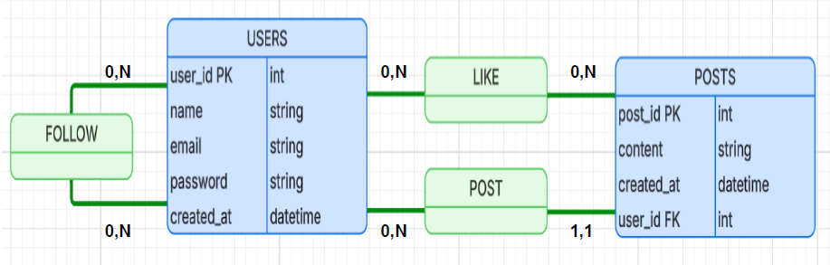

Application web de réseau social développée avec Laravel 12
SkyStorm est une application web de type réseau social développée avec Laravel 12 dans un contexte pédagogique pour la préparation à l’épreuve E6 du BTS SIO SLAM.
L’objectif était de concevoir une plateforme permettant aux utilisateurs de publier des messages, interagir entre eux (likes, abonnements) et consulter un fil d’actualité dynamique.

Ces relations sont gérées avec Eloquent ORM via des tables pivot (followers, likes).
Backend et logique métier
Framework MVC
Base de données relationnelle
Templates dynamiques
Architecture MVC, Laravel, Blade, gestion des routes et contrôleurs.
Relations 1-N et N-N, Eloquent ORM, migrations.
Authentification Laravel, protection des données utilisateurs.
Git, organisation du code, structuration professionnelle.